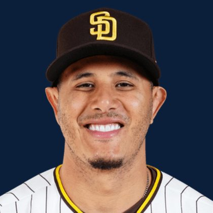

BASEBALLKEEP
Dynasty · Redraft · Diamond
Player File · 3B SD

Manny Machado
#13 · 3B · San Diego Padres · age 33 · B/T RR · 6' 2" / 218 lbs · MLB debut 2012 · Miami, USA
Keep avg164.38
# Boards8
BK Value293
Spread51–195
Hitting
| Year | G | AB | R | H | 2B | HR | RBI | SB | BB | SO | AVG | OBP | SLG | OPS |
|---|---|---|---|---|---|---|---|---|---|---|---|---|---|---|
| 2026 | 125 | 465 | 63 | 100 | 20 | 24 | 71 | 2 | 58 | 117 | .215 | .299 | .413 | .712 |
| 2025 | 159 | 615 | 91 | 169 | 33 | 27 | 95 | 14 | 55 | 131 | .275 | .335 | .460 | .795 |
The Keep#170BK 293
The Lineup#118BK 738
Redraft#167BK 309
Baseball Savant
Starcast · spray · pitch
Percentile ranks (Starcast) plus the official Savant spray chart for bats and pitch chart for arms. Open the full Baseball Savant page.
Batter · 2026
xwOBA
61
xBA
35
xSLG
64
xISO
69
xOBP
52
Barrels
78
Barrel %
62
EV
78
Max EV
82
Hard Hit %
71
K %
44
BB %
73
Whiff %
38
Chase %
47
Speed
7
Arm
49
OAA
94
Bat Speed
80
Squared Up
27
Swing Len
91
Hits spray chart
Minus
- Age 33 — dynasty tax.
- Board spread 51–195 (144 ranks).
Every Board
Spread 51–195 · 8 sources
| Source | Rank |
|---|---|
| FantasyPros Dynasty ECR | 51 |
| FanGraphs The Board | 170 |
| TDG Points | 172 |
| ESPN | 180 |
| NFBC ADP | 180 |
| ATC ROS | 180 |
| The Dynasty Dugout | 187 |
| RotoGraphs Model | 195 |
On The Keep nearby — Andrés Muñoz (#168) · Agustín Ramírez (#169) · Justin Crawford (#171) · Spencer Horwitz (#172)
All players · The Keep · BK News · The Lineup · Pitchers · Calculator